Discuz!论坛安装教程
作者：TeliuTe 来源：基础教程网
首先我们安装PHP环境，使计算机成为一台服务器，下面我们来看一个练习；
1、安装PhpStudy
1）双击下载的安装包，出来一个安装向导；
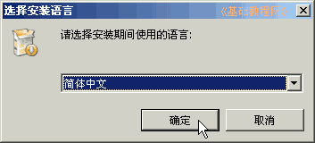
2）点“下一步”出来许可协议，点“我同意”；
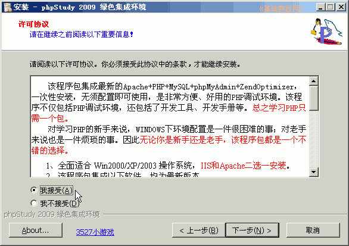
3）接下来是服务器程序的路径，点“下一步”继续；
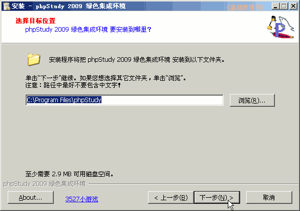
4）接下来是网站的存放位置，默认是“D:\www”，以后论坛的网页都放在这里面；
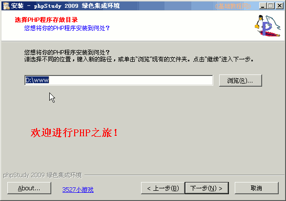
5）接下来是选择组件，里面有一些帮助文档，点“下一步”继续；
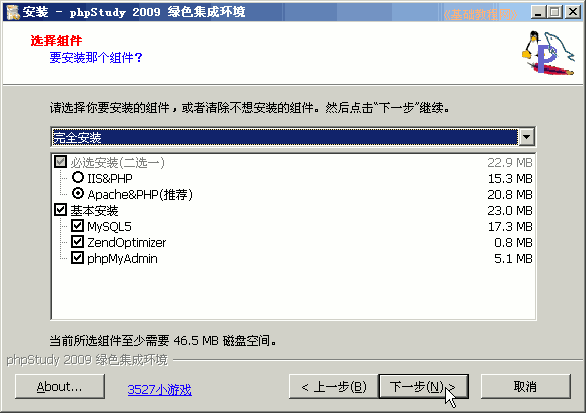
6）检查无误后，点“安装”开始安装程序；
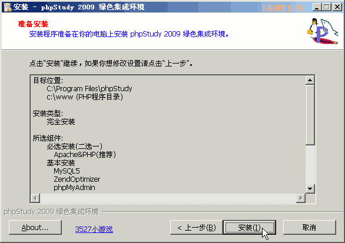
7）安装完成后，自动打开一个php文件，显示安装的各个组件，以后开机会自动启动服务器；
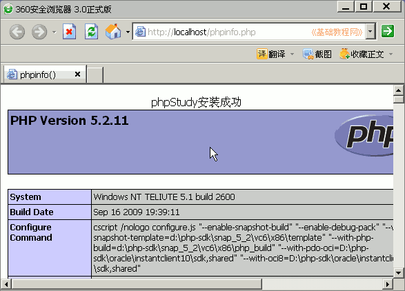
2、Ubuntu里安装xampp
新版的解压后得到一个.run文件，在文件属性里设置可执行权限后，以管理员身份双击打开或在终端运行即可；
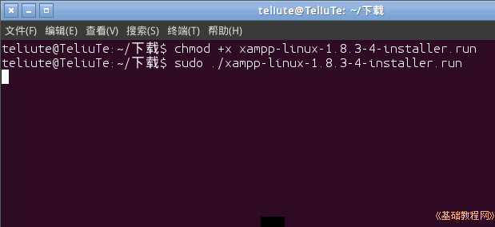
1）将下载的 xampp-linux-1.7.3.tar.gz 放到主文件夹里，打开终端，输入命令 sudo tar xvfz xampp-linux-1.7.3.tar.gz -C /opt
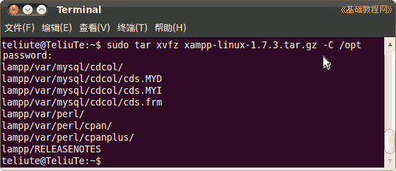
2）打开终端，再输入命令 sudo /opt/lampp/lampp start 启动服务器程序；
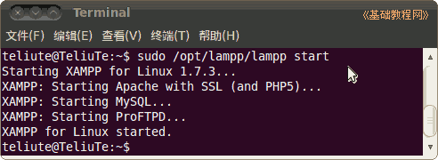
5）再打开浏览器，在地址栏输入 http://127.0.0.1 用ip 地址访问本机，也可以用http://localhost 来访问；
6）在首页中点“中文”，然后在左侧导航栏中，点“状态”查看mysql和php服务的运行情况
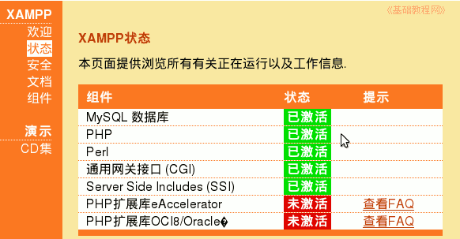
停止服务的命令是 sudo /opt/lampp/lampp stop ，如果服务没有正常启动，可以先运行停止命令，然后再运行 start 启动命令；
本节学习了安装服务器程序的基本方法，如果你成功地完成了练习，请继续学习下一课内容；
本教程由86团学校TeliuTe制作|著作权所有
基础教程网：http://teliute.org/
美丽的校园……
转载和引用本站内容，请保留作者和本站链接。